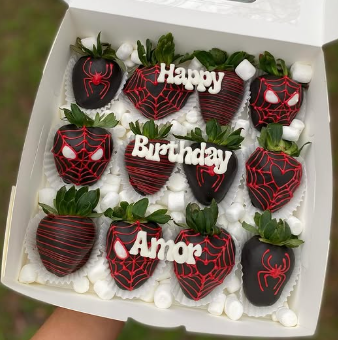

Welcome to our Home Page!
1 / 3

Snoopy Chocolate covered Strawberries!
2 / 3
Penguin Themed Rose Boquet!
3 / 3

SpiderMan Themed Strawberries!
Welcome! to the flores y fresas home page. Above you can see a carousel of some of our featured offerings including ramos, berry cups and more!